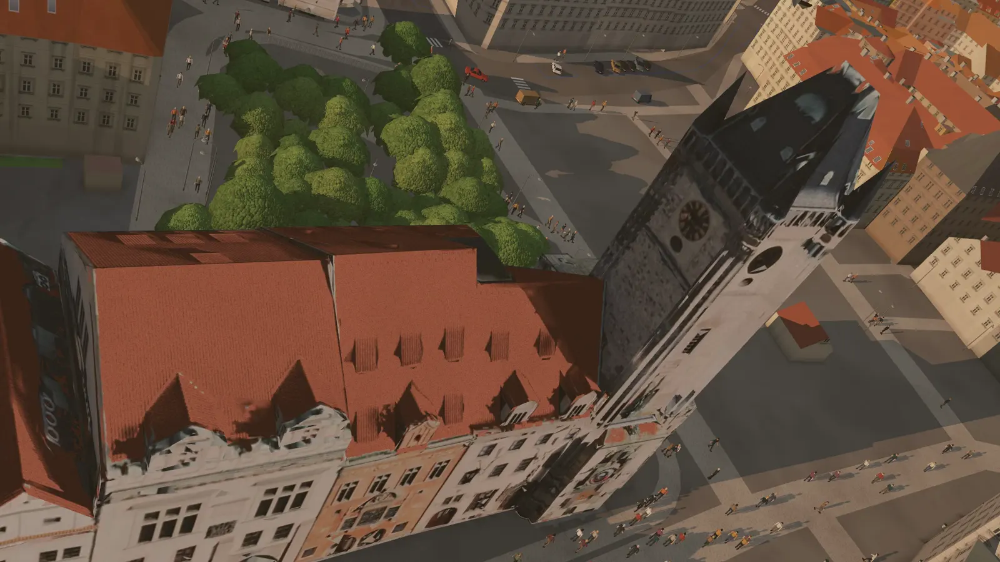
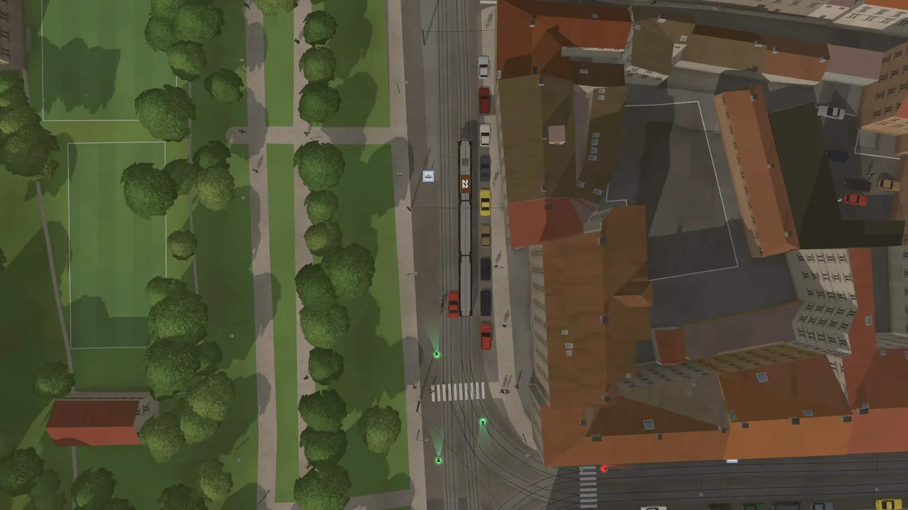
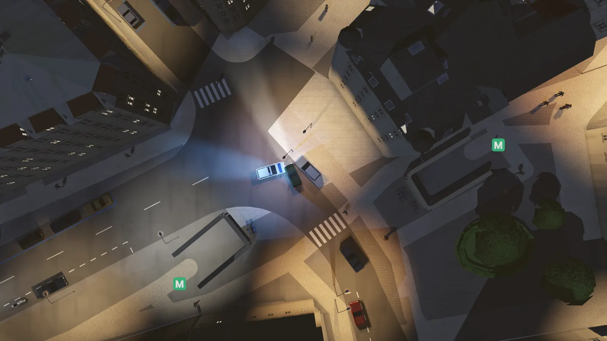
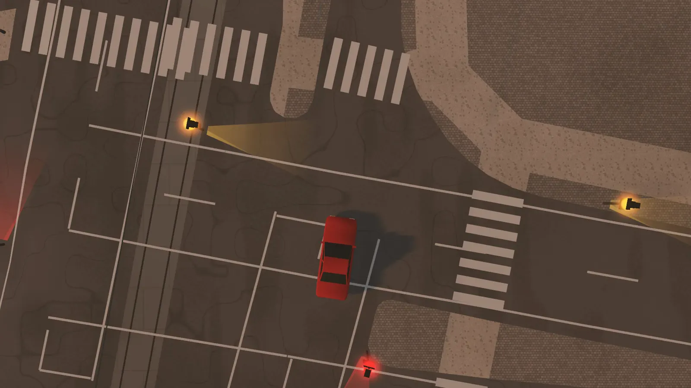
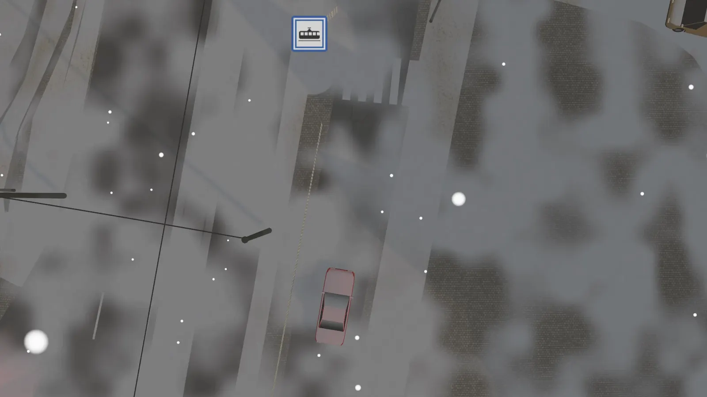

The whole of today's Prague as an open-world driving game. Free, in your browser.
Runs on a computer, tablet or phone, with nothing to install. This is an early version, so expect rough edges.
Every street, house, tram line and hill stands where it does in the real Prague. Look up the street you live on, your way to work or the corner you grew up on, then take a car and see how far you get.
Get into any car, parked or driving past, and go wherever the streets lead. Hard braking leaves tyre marks, and a car that has taken too many knocks catches fire.
Trams run their real lines by the real timetable, and the metro entrances are where you know them. A ticket costs 46 Kč. Ride without one and an inspector may end up chasing you down the street.
Speeding, crashing and stealing cars earn you stars. Patrol cars come after you first, then officers on foot, and from three stars a helicopter that sees you over the rooftops.
The game opens at the hour and in the weather Prague has right now. Rain, storms, mist and snow come and go, and after dark the street lamps come on, each one where it really stands.
Wave down a taxi or order a cheaper one whose driver is in more of a hurry. Take a pedal boat out on the Vltava, or the funicular up Petřín.
A burning car brings a fire engine, and someone hurt brings an ambulance. Both can be driven away, and the fire engine's water cannon works.





Almost nothing in the game was modelled by hand. The city is put together from maps and measurements that Prague and its mapmakers publish for anyone to use.
When the data changes, the game's map can be built again, so a new tram line or a rebuilt square can find its way in.